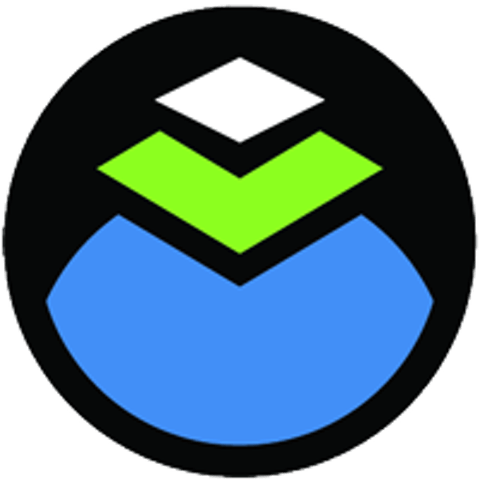

How a pin tumbler lock works
This project was developed in two iterations: as a module built for a single student and a collaborative version for pairs of students.
Working as a team of three, we had students hypothesize how a master key system works before teaching them conceptual knowledge about pin tumbler locks. By using this Invent-then-Tell method, our objective was for students to attain near transfer to procedural knowledge about how a master key system works. Take a look at the source code and project writeup for more information.
The collaborative version of this lesson was created using a Jigsaw paradigm, where students learn separate modules, teach each other specific conceptual knowledge about what they learned, and come together to finish the lesson, fostering positive interdependence. Source code and a writeup are also available for this project.
Tools used:


A learnersourced quiz with feedback
Learnersourcing is a technique for taking open-ended responses to quiz questions and developing novel formative assessments. In this project, I took raw data from quizzes we did in my Tools for Online Learning course, parsed it according to an algorithm which cross-referenced students' answers to the question/answer key, and generated a new quiz questions, answers, and feedback. A full writeup with code is located in the project's GitHub repository.
Tools used:
NoRILLA
In Spring 2020, I worked with NoRILLA, a mixed reality platform which teaches students physics principles using interactive and constructive activities. This document summarizes the work I did over the course of four months, which included object segmentation, detection, and debugging a computer vision algorithm. More information about NoRILLA and its founder can be found here.
Tools used:
Intro to CSV Operations in Ruby
This is a lesson plan built for the Turing School of Software and Design. It also covers memory management, reviewing documentation, and edge cases involved in parsing CSV data.
This lesson is targeted toward novice students who know nothing about data processing.
Tools used:
Selecting from the DOM
This was a group instructional design project in Carnegie Mellon University's E-Learning Design Principles course. In our course module, we taught students how to select elements and content from a table using JavaScript.
Tools used:
Performing CRUD Operations on the DOM Using JavaScript
This is an Open Learning Initiative (OLI) module made for the Programmable User Interfaces course at Carnegie Mellon University. You can view the 15-minute video presentation below, which explains my motivation for creating this course, challenges I encountered, and feedback received from students during and after the course was designed.
Tools used:

Panhandle
Panhandle is a web microframework that allows developers to static build websites with blogging capabilities using GitHub Pages and handlebars templates using an automatically refreshing local dev server. This website is built using Panhandle.
Tools used:
Dashboard Design
During this project, I took upon the role of a User Experience (UX) Designer to create a digital dashboard for a university Introduction to Game Design course. Most of my peers used tools like PowerPoint, Figma, or Adobe Sketch to create their designs, but I used Ember.js to more readily use the data provided in the dashboard as a design constraint. In this repository are code, demos for each view I created, and a Process Book detailing my iterations and thought process.
Tools used:

No Shave November 2016 Fundraiser
I decided to raise money for cancer awareness by taking a selfie of myself every day, updating my No Shave November campaign page, and sharing the daily updated photo on Facebook. I also spoke to my employer and he agreed that the company would match the funds I raised. After 30 days, I raised $630 for cancer awareness.
Empathy Cards
I turned a deck of one instruction card, 47 feeling cards, and 48 need cards into an online tool for others to use in order to better understand their emotions and inner life.
Tools used:
Dabble Flashcards
Dabble is a flashcards app I created for myself after working with AnkiApp, a Mac desktop-based app that allows a user to upload CSV files.
Tools used: